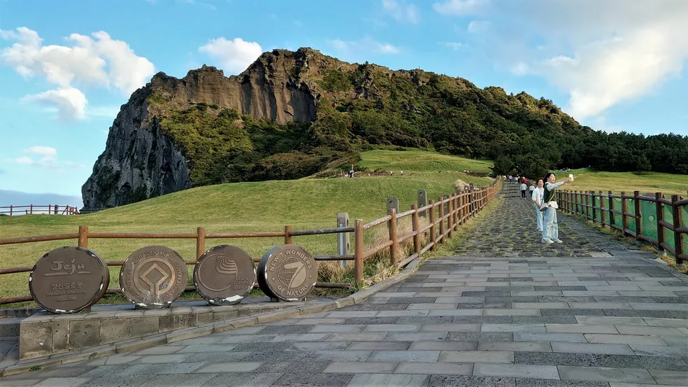
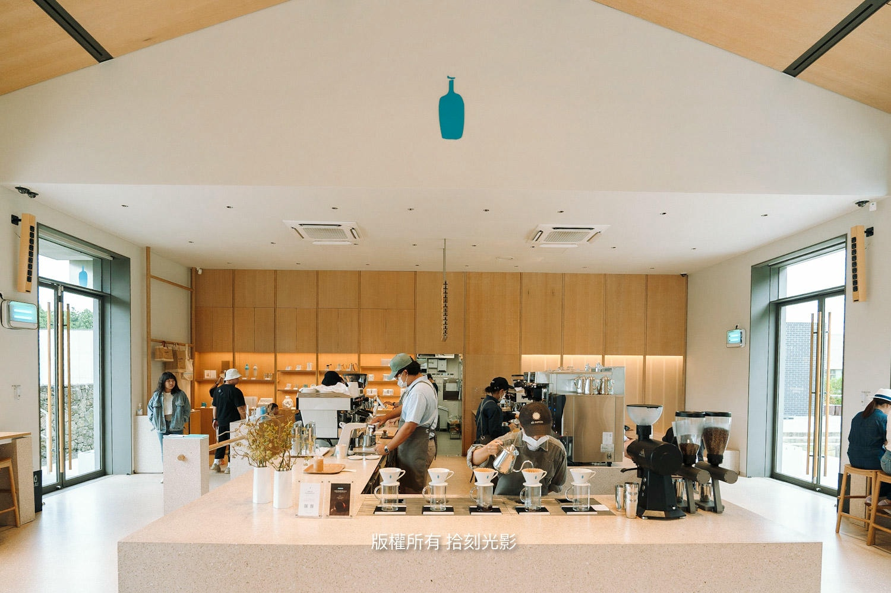
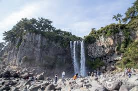
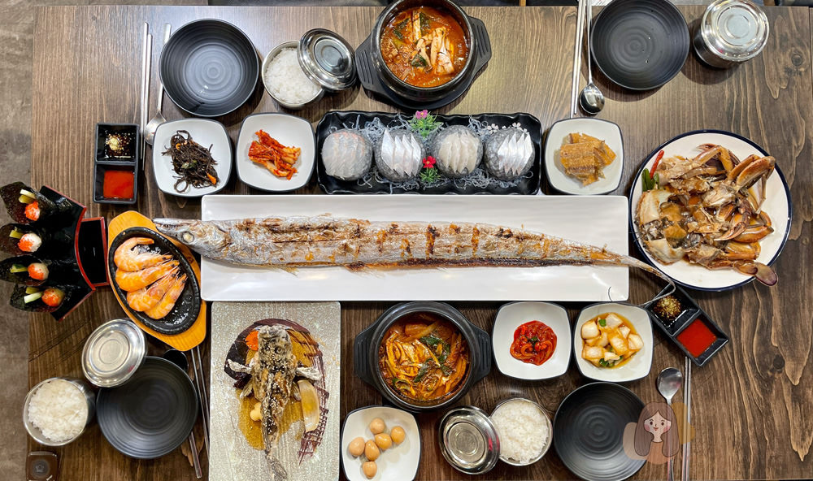
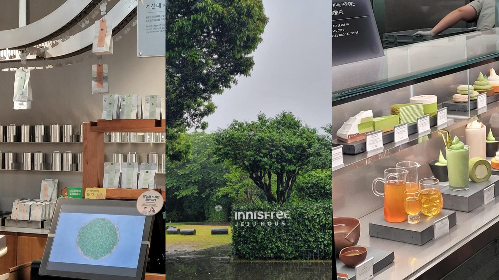
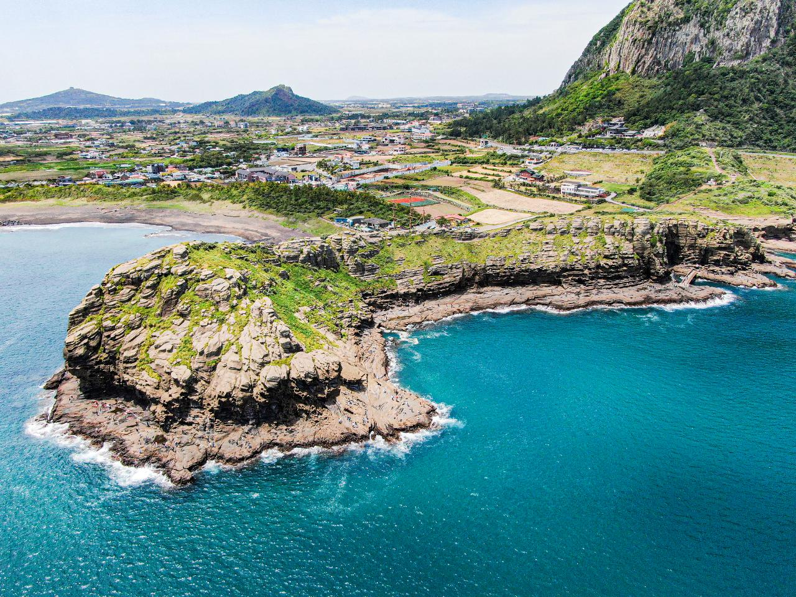
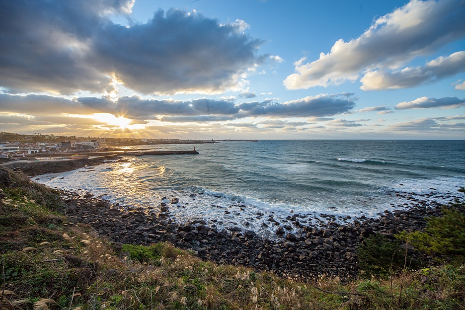

我們的濟州島 5 天 4 夜 (達、岱臻、爸、媽)
核心資訊
- 人員: 4 人 (達、岱臻、爸、媽)
-
租車: 樂天租車 (Lotte Rent-a-Car) 時間: 11/21 11:30 (取) - 11/25 20:00 (還)
- 住宿 1 (11/21 - 11/23): Hotel RegentMarine Jeju (Booking)
- 住宿 2 (11/23 - 11/25): Seogwipo-si Airbnb (Airbnb)
- 備用地圖: Naver Map (韓國慣用)
行程總覽 (大綱)
11/21 (五) - 濟州市
機場取車、市區探索、晚上接機、東門夜市
11/22 (六) - 濟州東部
倫敦貝果、咖啡廳、山君不離、城山日出峰、黑豬肉
11/23 (日) - 跨區移動
熟成道烤肉、採買、換宿至西歸浦、偶來市場
11/24 (一) - 西歸浦
瀑布、射擊場、雪綠茶博物館、海岸景觀
11/25 (二) - 涯月 & 返途
上午送機、涯月邑咖啡廳、購物、機場還車
每日詳細行程
Day 1: 11/21 (五) - 濟州市 (Jeju City)
機場取車、市區探索、晚上接機、東門夜市

團長提示 (岱臻)： 第一天重點是順利取車和安頓。晚上接爸媽前，我們先回飯店 Check-in 放行李會比較輕鬆。Emart 的店休日 (11/22) 已確認，今晚必須先採買。
| 時間 | 活動 | 車程 | 停留 | 備註 |
|---|---|---|---|---|
| 11:30 | 樂天租車 | - | 1hr | 機場接駁過去, 當場刷卡韓國最大租車公司之一，服務品質優良，車況良好。記得攜帶國際駕照和信用卡。 |
| 12:30 | Paris Baguette |
10m | 15m | 機場附近, 快速買點心韓國連鎖麵包店，橘子塔、可頌和三明治都很受歡迎。 |
| 13:00 | 姊妹湯麵 |
10m | 1hr | 14:00-16:00 休息, 16:50 最後點餐濟州必吃名店，招牌是고기국수（豬肉湯麵）和비빔국수（拌麵），湯頭濃郁，麵條Q彈，常需排隊30分鐘以上。 |
| 14:00 | 에귤타르트 (橘子塔) | 10m | 30m | 姊妹附近, 靠海邊的橘子小店位於伊湖海邊的橘子塔專賣店，使用濟州新鮮橘子製作，可以邊吃甜點邊欣賞海景和彩虹海岸道路。 |
| 14:30 | 9.81 Park |
30m | 2.5hr | 票在 Klook無動力重力賽車主題樂園，利用重力和坡度加速，刺激又安全，適合全家同樂。包含多種賽道和體驗。 |
| 17:30 | 귤메달 하우스 |
35m | 30m | 橘子汁/橘子店, 飯店旁邊, 11:00-19:00100%濟州橘子現榨果汁，可愛的獎牌造型瓶身是人氣拍照道具，還可購買各種橘子相關商品。 |
| 18:00 | Hotel RegentMarine | 10m | 1.5hr | Check-in 並稍作休息位於濟州市中心的四星級酒店，鄰近東門市場和七星街，地理位置便利。 |
| 19:30 | 濟州國際機場 | 15m | 45m | 20:00 接爸媽 |
| 20:30 | 東門市場 |
15m | 1.5hr | 8號出口是夜市街 18:00-24:00濟州最大傳統市場，夜市有各種小吃攤位，必吃橘子、海鮮煎餅、炒年糕等。市場內還有生鮮、乾貨、紀念品等。 |
| 22:00 | Emart (濟州店) |
10m | 30m | 住宿走路十分鐘超市, 11/22店休, 買葡萄/優酪乳韓國最大連鎖超市,可買到濟州特產、零食、飲料等。濟州葡萄特別香甜,韓國優酪乳種類豐富。 |
0
Day 2: 11/22 (六) - 濟州東部 (East Jeju)
倫敦貝果、山君不離、城山日出峰、黑豬肉

團長提示 (岱臻)： 今天行程滿滿，會環島濟州東部。週六人潮較多，倫敦貝果務必提早抽號。如時間不夠，Snoopy Garden 和城山日出峰可擇一或跳過，優先保留咸德海邊的晚餐時光。
| 時間 | 活動 | 車程 | 停留 | 備註 |
|---|---|---|---|---|
| 08:30 | 倫敦貝果博物館 |
40m | 2hr | Catch Table 抽號碼牌濟州超人氣貝果店，必須提早用 Catch Table App 抽號。招牌貝果配奶油乳酪和各種口味選擇，海景座位很美。 |
| 10:30 | The Container 咖啡廳 |
25m | 1hr | 橘子咖啡廳/橘子美式/橘子園拍照貨櫃屋造型咖啡廳，周圍有橘子園，橘子美式咖啡和橘子甜點是招牌，IG 熱門拍照點。 |
| 11:45 | 山君不離 |
30m | 1.5hr | 芒草/門票每人7000韓元, 9:00-17:00濟州唯一的爆裂火山口，秋天芒草盛開時超美，環形步道約40分鐘，UNESCO 世界自然遺產。 |
| 13:15 | Snoopy Garden |
15m | 1hr | 時間多的話可去, 紀念品店不用門票, 9:00-18:00亞洲最大的史努比主題花園，五個主題區域，適合拍照打卡，紀念品店可免費參觀。 |
| 14:30 | Blue Bottle (濟州店) | 30m | 45m | 咖啡廳, 飲料好喝/保溫杯美國精品咖啡品牌，濟州店是獨棟建築，有濟州限定周邊商品和保溫杯，咖啡品質優良。 |
| 15:30 | 城山日出峰 |
40m | 1.5hr | 時間太晚可跳過/票亭前左邊免費路段/17:20日落濟州必遊地標，UNESCO 世界自然遺產，火山爆發形成的巨大岩峰。登頂約30分鐘，可看海女表演。 |
| 17:30 | 前往咸德海邊 | 60m | - | 本日最長車程 |
| 18:30 | Audrant Bakery | - | 1hr | 大蒜麵包, 7:00-22:00咸德海邊超人氣麵包店，大蒜奶油麵包是必吃招牌，還有各式歐式麵包，可邊吃邊看海。 |
| 19:30 | 카페요아정 優格冰 | 5m | 30m | 17:00-23:40韓國連鎖冷凍優格冰淇淋店，口感綿密清爽，配料豐富，價格實惠。 |
| 20:00 | 豬舍豬烤肉 |
30m | 2hr | 豬夾肉 三層肉/定位 18:30 (強烈建議改期)濟州黑豬肉名店，肉質鮮嫩多汁，專人代烤服務，招牌三層肉必點，常需排隊。建議改訂20:30。 |
| 22:00 | 七星街 |
10m | 30m | 飯後散步濟州市中心購物街,有各種商店、咖啡廳、餐廳,晚上大部分店家已關門,適合散步消食。 |
0
💬 Day 2 行程留言
Day 3: 11/23 (日) - 濟州 → 西歸浦 (Seogwipo)
熟成道烤肉、採買、換宿至西歸浦

團長提示 (岱臻)： 今天是跨區移動日 (北 -> 南)。重點是 12:00 前退房，並在 12:00 準時抵達「熟成道」。下午的行程都在往南的路上，最後到西歸浦的 Airbnb Check-in。
| 時間 | 活動 | 車程 | 停留 | 備註 |
|---|---|---|---|---|
| 09:00 | 東門市場 / 七星街 | 5m | 1.5hr | 補逛、買紀念品早上逛市場較不擁擠，可買濟州特產、柑橘巧克力、海苔等伴手禮。七星街有化妝品店、服飾店。 |
| 10:30 | Hotel RegentMarine | 5m | 30m | 12:00 前 Check-out (帶行李) |
| 11:30 | 숙성도 熟成道烤肉 |
20m | 2hr | 定位 12:00濟州頂級熟成黑豬肉專賣店，肉質軟嫩入口即化，是當地人也愛的名店，必點熟成五花肉和梅花肉。 |
| 13:30 | 樂天超市 (濟州店) |
10m | 1hr | 採買零食飲料韓國第二大連鎖超市，選擇豐富，可買飲料、零食、水果等 Airbnb 住宿用品。 |
| 14:30 | 새별프렌즈 農場 | 30m | 1hr | 門票現場買可愛動物農場，可餵食羊駝、小羊、兔子、天竺鼠等，適合拍照，門票約10000韓元。 |
| 16:00 | 濟州堂 (제주당) | 20m | 45m | 牛奶芝麻軟法、橘子汁好吃, 大蒜麵包、肉桂捲普濟州特色麵包店，使用濟州食材製作，牛奶芝麻軟法和橘子汁評價最高，可買隔天早餐。 |
| 17:00 | 偶來市場 | 50m | 1.5hr | 7:00-21:00西歸浦最大傳統市場，有各種小吃、海鮮、生鮮、紀念品。必吃橘子炸雞、黑豬肉包子、海鮮煎餅。 |
| 18:30 | Airbnb Check-in | 10m | - | 16:00 後可 Check-in |
0
💬 Day 3 行程留言
Day 4: 11/24 (一) - 西歸浦 (Seogwipo)
瀑布、射擊場、雪綠茶博物館、海岸景觀

團長提示 (岱臻)： 今天專心玩西歸浦周邊。景點間車程都不算太長。「龍頭海岸」受潮汐影響，建議出發前查詢當日潮汐表 (Naver Map 可查)，滿潮時會關閉。
| 時間 | 活動 | 車程 | 停留 | 備註 |
|---|---|---|---|---|
| 09:30 | 正房瀑布 | 10m | 1hr | 亞洲唯一直接入海的瀑布濟州三大瀑布之一，高23米，是亞洲唯一直接流入海中的瀑布，景觀壯麗。門票2000韓元。 |
| 10:30 | 濟州實彈射擊場 | 15m | 1hr | 10:00-19:00合法實彈射擊體驗場，有專業教練指導，提供多種槍枝選擇，安全且刺激。需攜帶護照。 |
| 11:45 | 滿足的商會 | 20m | 1.5hr | 未定位西歸浦人氣海鮮餐廳，提供新鮮海鮮套餐，份量大價格實惠，鮑魚粥和生魚片很受歡迎。 |
| 13:15 | 雪綠茶博物館 | 40m | 1.5hr | O'sulloc 綠茶甜點、飲料韓國最大茶園品牌，免費參觀綠茶田，必吃綠茶冰淇淋、綠茶蛋糕。旁邊的 Innisfree Jeju House 也值得逛。 |
| 15:00 | 龍頭海岸 | 20m | 1hr | 注意潮汐，滿潮關閉千萬年海浪侵蝕形成的沙岩層，造型奇特如龍頭。需走樓梯下去，滿潮時會關閉，務必查詢潮汐表。 |
| 16:15 | 柱狀節理帶 | 25m | 1hr | 火山熔岩形成的六角形石柱火山熔岩冷卻形成的天然柱狀玄武岩，高達20米，海浪拍打石柱景觀震撼。門票2000韓元。 |
| 17:30 | BHC 炸雞 | 20m | 30m | 有骨 macho king韓國連鎖炸雞品牌,Macho King 是超大份量炸雞,外皮酥脆肉質多汁,適合外帶回 Airbnb 享用。 |
0
💬 Day 4 行程留言
Day 5: 11/25 (二) - 涯月 & 返途
上午送機、涯月邑咖啡廳、購物、機場還車

團長提示 (岱臻)： 今天是返途日。一早要從西歸浦(南)開車到機場(北)，車程很長 (約 1-1.5 小時)，請務必提早出發。送機後，達和岱臻的行程都在機場附近，比較輕鬆。
| 時間 | 活動 | 車程 | 停留 | 備註 |
|---|---|---|---|---|
| 07:30 | Airbnb Check-out | 70m | - | 帶上所有行李, 本日最長車程 |
| 09:00 | 濟州國際機場 | - | 30m | 09:00 送爸媽到機場 |
| 09:30 | PPEUM (제주점) | 15m | 1hr | 預約 10:00達和岱臻的行程。 |
| 11:00 | 涯月邑 |
40m | 2.5hr | 看海/咖啡廳濟州最美海岸線，咖啡廳一級戰區，推薦月汀里海邊、涯月海岸道路。有 Monsant Café、咖啡漢拏山等名店。 |
| 13:45 | 逛街 (二選一): 新羅免稅店 / 蓮洞步行街 | 30m | 2hr | 免稅店 or 步行街/買伴手禮新羅免稅店有化妝品、精品、韓國特產。蓮洞步行街有餐廳、咖啡廳、服飾店、innisfree 等。 |
| 16:00 | 식당 마요네즈 | 10m | 1.5hr | 炸豬排義大利麵濟州人氣西式餐廳，招牌炸豬排義大利麵份量大、口味佳，還有漢堡、燉飯等選擇。 |
| 17:30 | 最後採買 / 空檔 | - | 1hr | 可去附近的 Lotte Mart最後機會補買伴手禮、零食等。 |
| 18:30 | 加油 | - | 30m | 還車前需加滿油機場附近有加油站，記得索取收據以備還車查驗。 |
| 19:30 | 樂天租車 | 10m | 30m | 20:00 機場還車 |
0
💬 Day 1 行程留言